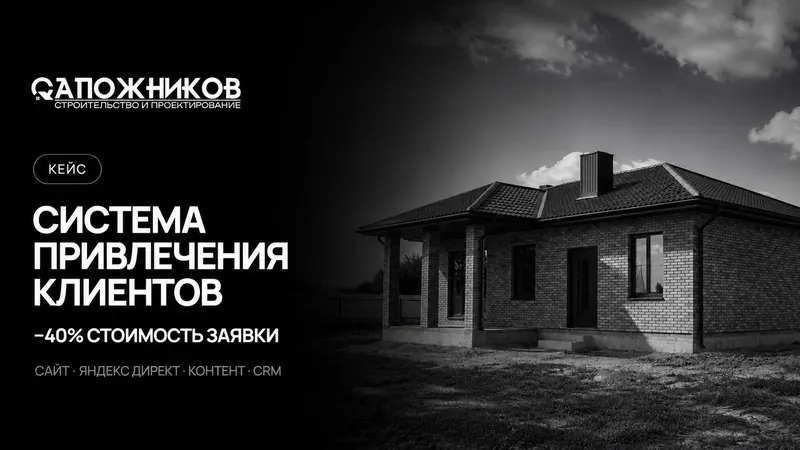

Яндекс Директ
Подберём запросы под ваши услуги, ограничим географию, подготовим объявления и страницы для перехода. Отдельно обсудим, какие направления продвигать в первую очередь.
Яндекс Директ и VK Реклама · Воронеж
Настраиваем рекламу для бизнеса Воронежа и области. Разбираемся, что вы продаёте и кто это покупает, проверяем страницу для переходов и подключаем учёт заявок.
Причина может быть в запросах, объявлении, странице или самом предложении. Смотрим на весь путь: что человек искал, что увидел и почему решил обратиться или уйти. Так понятнее, что исправлять первым.
Подберём запросы под ваши услуги, ограничим географию, подготовим объявления и страницы для перехода. Отдельно обсудим, какие направления продвигать в первую очередь.
Определим аудитории, подготовим изображения, видео и тексты. Согласуем, куда направлять человека: в сообщество, сообщения или на сайт.
Настроим цели и проверим действия, которые важны бизнесу: отправку формы, звонок и переход в мессенджер. Будем различать клик по кнопке и подтверждённую заявку.
После запуска проверяем запросы, объявления и расход бюджета. Обсуждаем качество обращений с вами, чтобы оценивать рекламу по реальной работе бизнеса.
Вы будете понимать, какие кампании приводят обращения и во сколько они обходятся. Состав отчёта, периодичность и критерии оценки согласуем до запуска.

Из нашей практики
Для строительной компании создали сайт, настроили Яндекс Директ и передачу обращений в CRM. Это помогло дополнить Avito собственными каналами привлечения клиентов.
Посмотреть проект ↗Смета зависит от числа услуг, географии, состояния кабинета и объёма материалов. Настройку, дальнейшее ведение и деньги на показы рекламы обсуждаем отдельно. Начнём с задачи и бюджета, с которым вам комфортно работать.
Работаем с бизнесом Воронежа и области. Задачу и материалы можно обсудить онлайн. Сроки фиксируем после того, как определим объём работ.
Получить расчёт для моей задачи ↗Да. Сначала обсудим, что вас не устраивает и какие результаты вы видите. Для проверки настроек и статистики согласуем доступ к кабинету. Пароли в форме заявки не нужны.
Выбор зависит от продукта и того, как его покупают. Обсудим спрос, аудиторию и материалы. Начать можно с одного канала, затем оценить качество обращений.
До запуска нельзя достоверно назвать одинаковый результат для любой компании. Мы фиксируем работы и критерии оценки; число заявок зависит также от спроса, бюджета, предложения и обработки обращений.
Обсудим ваш проект
Пришлите ссылку на сайт или соцсеть и коротко опишите задачу. Ответим в течение рабочего дня.
+7 952 101 90 67